2 Step 2: Nuclei segmentation of individual capture areas images
The functions VNS(Visium Nuclei Segmentation) and refineVNS from the pipeline are used to perform nuclei segmentation.
2.1 VNS - Visium Nuclei Segmentation
The inputs to the VNS function are 1. The tif image of single capture area (output from Step 1: splitSlide function) with full path 2. number of colors a user visually identifies in the single capture area image
The VNS function imports the capture area image, applies smoothening to it to get rid of any irregularities in the image and increases the contrast to brighten the nuclei for better detection.
This function is based on Color-Based Segmentation Using K-Means Clustering. The smoothened and brightened image is converted from RGB color space to CIELAB color space also called L*a*b color space (L - Luminosity layer measures lightness from black to white, a - chromaticity-layer measures color along red-green axis, b - chromaticity-layer measures color along blue-yellow axis). The CIELAB color space quantifies the visual differences caused by the different colors in the image. The a*b color space is extracted from the L*a*b converted image and is given to the K-means clustering along with the number of colors the user visually identifies in the image.
The VNS function partitions the image into n (number provided by user, 5 for the sample used here) color clusters and saves them as individual objects with a index/label. The color clusters (cell array), the indexed objects (cell array) of the color clusters, images of the color clusters (tif) are all saved in the same location as the capture area tif image.
fname = '/path_to_capture_area_tif/Lieber_Institute_OTS-20-7690_rush_anterior_A1.tif';
N = 5; % 5 (white,pink,dark pink,cream,blue) colors seem good for the images produced in-house
VNS(fname,N)
% should add the output printed on matlab command promptBelow are the outputs of VNS function 1. Lieber_Institute_OTS-20-7690_rush_anterior_A1_cluster1.tif 2. Lieber_Institute_OTS-20-7690_rush_anterior_A1_cluster2.tif 3. Lieber_Institute_OTS-20-7690_rush_anterior_A1_cluster3.tif 4. Lieber_Institute_OTS-20-7690_rush_anterior_A1_cluster4.tif 5. Lieber_Institute_OTS-20-7690_rush_anterior_A1_cluster5.tif 6. Lieber_Institute_OTS-20-7690_rush_anterior_A1_cluster.mat 7. Lieber_Institute_OTS-20-7690_rush_anterior_A1_mask.mat
The color clusters and the corresponding indexed objects of the sample image are shown below.

 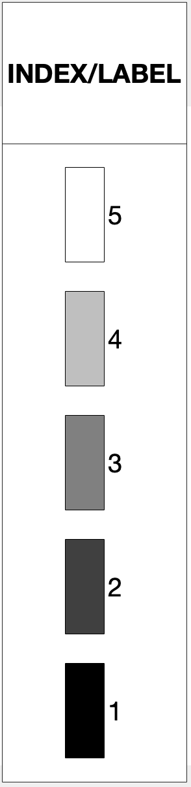
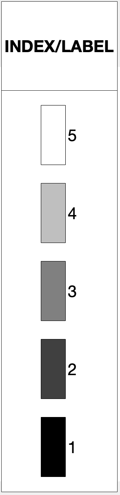  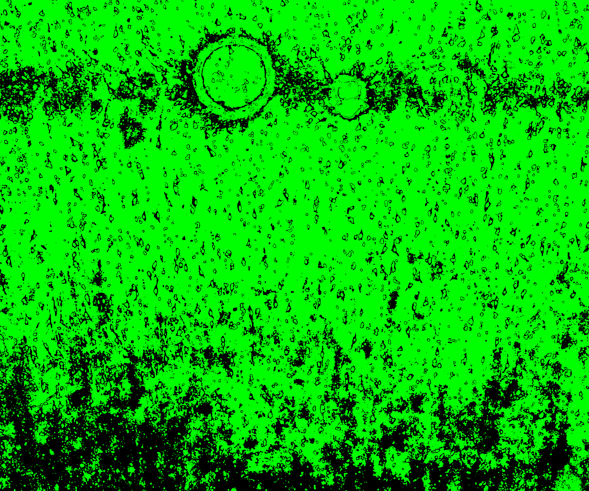 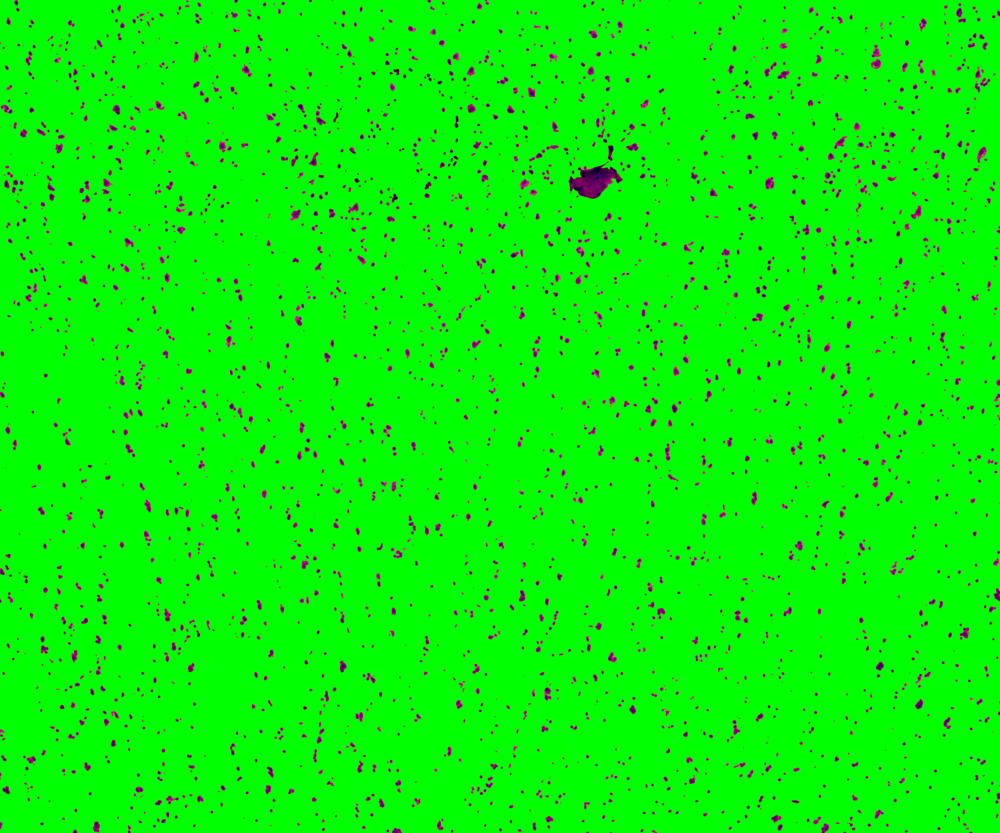 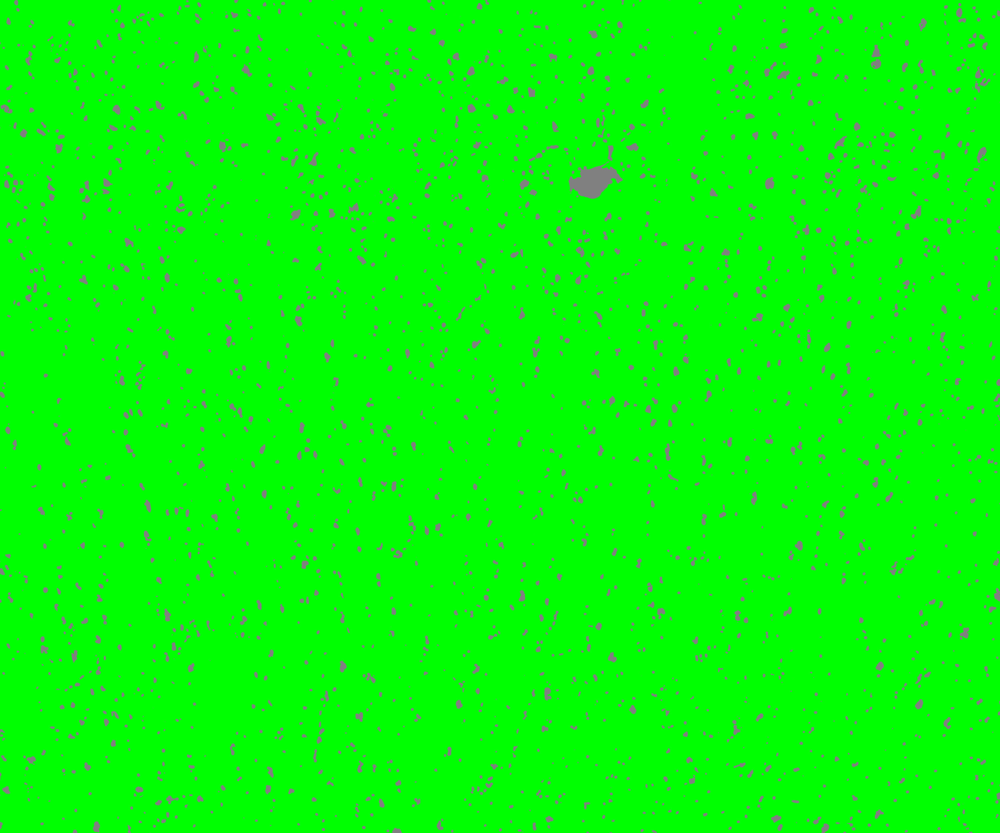
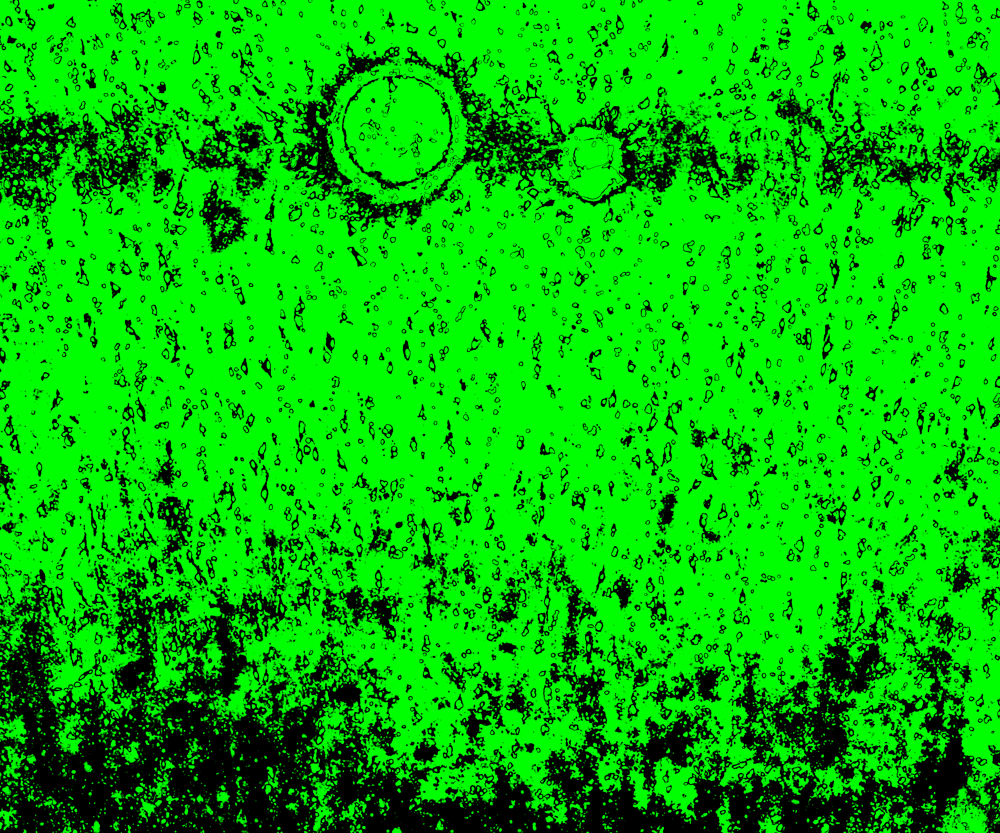 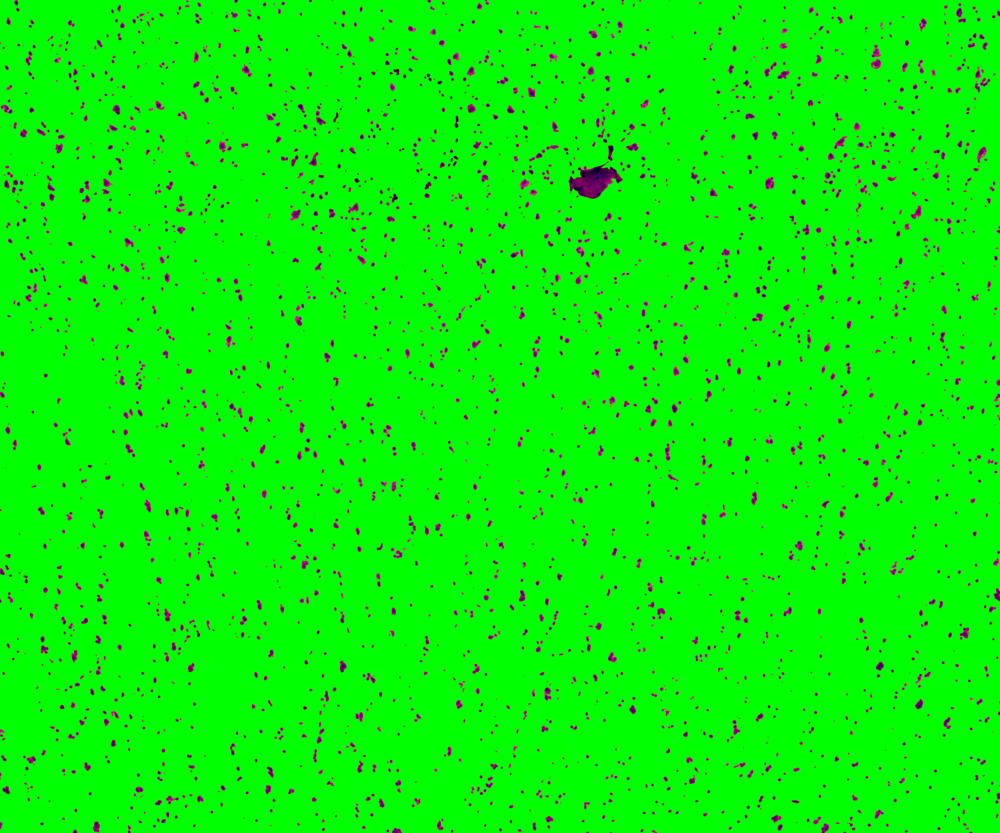 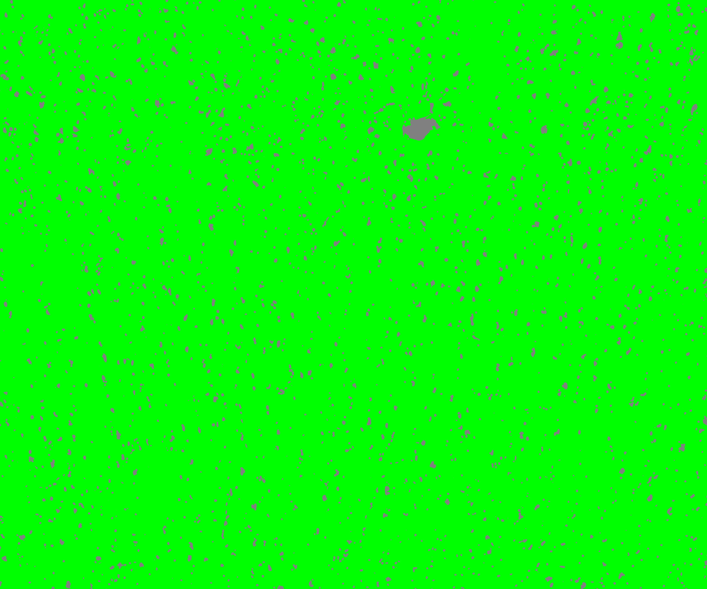  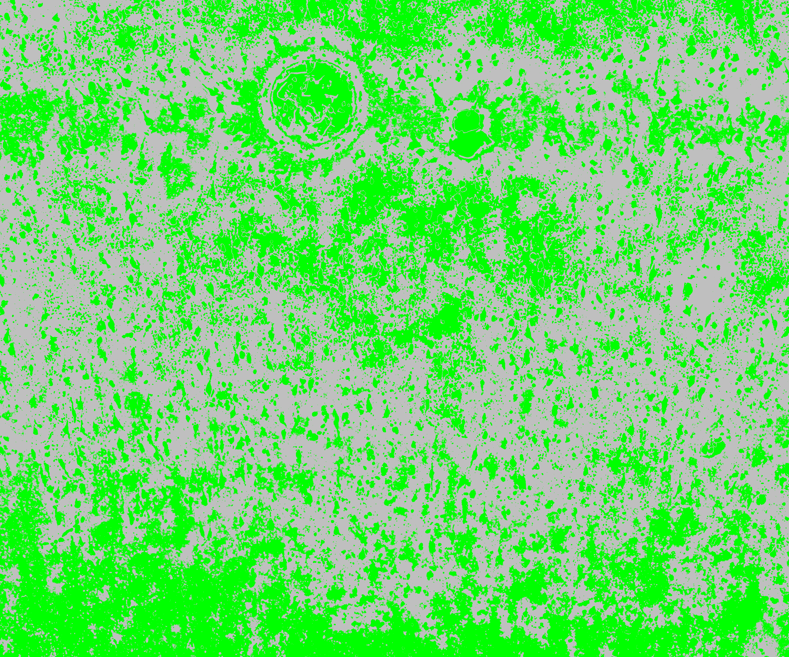 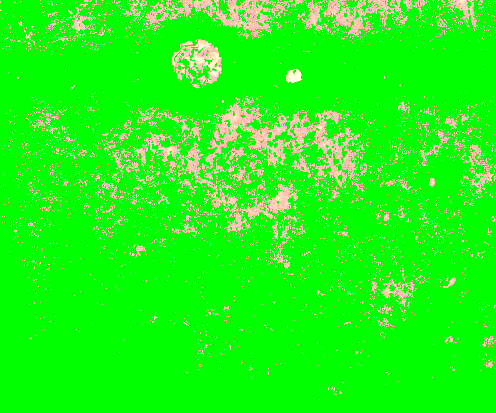 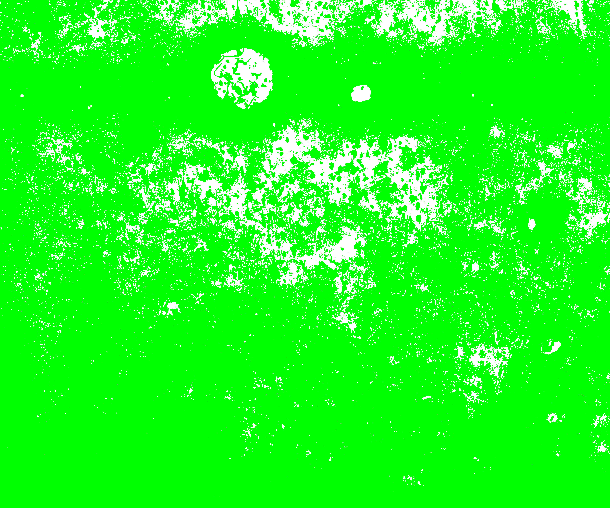
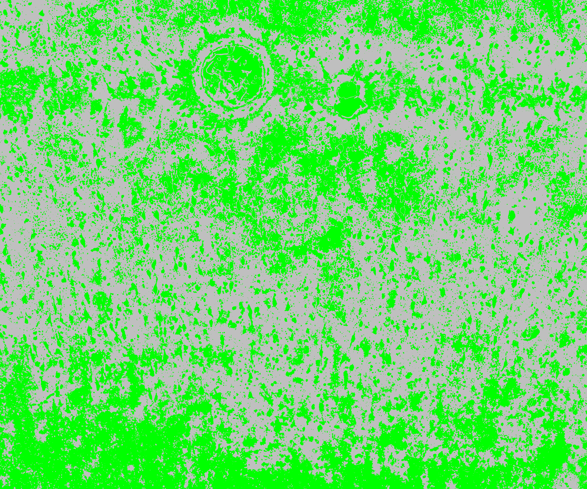 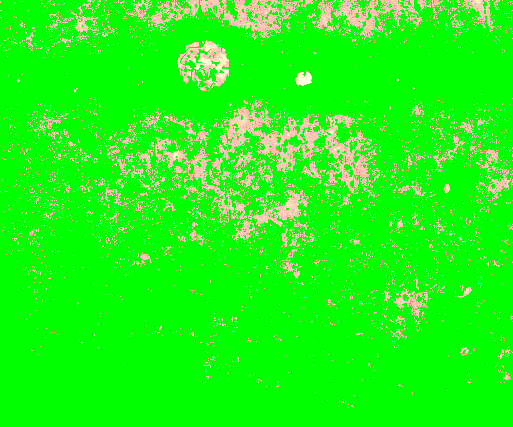 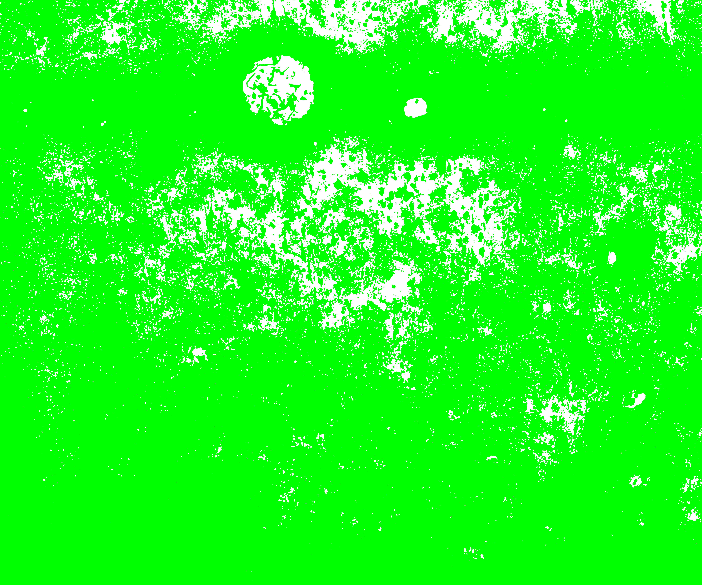
2.2 refineVNS
This function is used to refine the segmentations for accurate detection of nuclei.
The inputs to the function are 1. The tif image of a single capture area with full path 2. The index of the color cluster of the nuclei
fname = '/path_to_capture_area_tif/Lieber_Institute_OTS-20-7748_rush_posterior_A1.tif';
M = 3;
refineVNS(fname,N)The color cluster before and after refining is shown below.